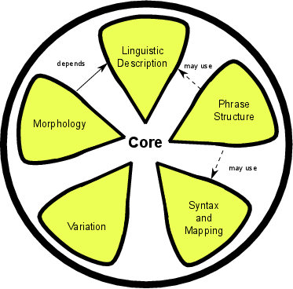

The core of lemon represents a sufficient model for representing a simple lexicon, however for most lexica more sophisticated description is required. This is provided by the following modules:
- Linguistic Description: This allows linguistic properties, that are commonly found in dictionaries, may be added to elements in the lexicon
- Variation: This allows relationships between different elements of a lexicon to be described
- Phrase structure: This describes the representation of multiple word expressions within lexica
- Syntax and mapping: This concerns the representation of syntactic frames and mapping these frames to logical predicates in an ontology
- Morphology: This module provides compact mapping for a inflected and agglutinative forms of entries.
Subsections
John McCrae
2012-07-31